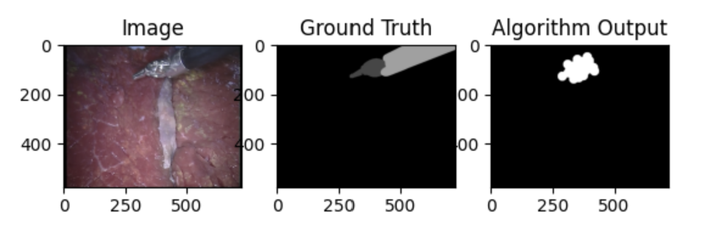
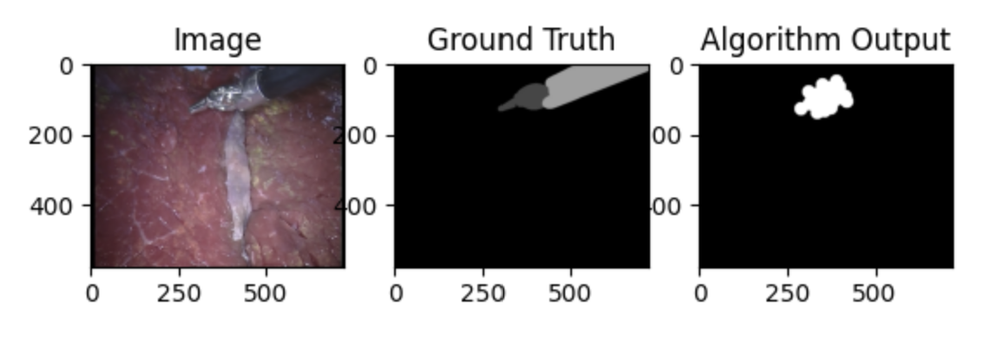

Example sift segmentation results


Keypoint matches - can be further integrated with optical flow for tracking

[1] Choudhary, A. (n.d.). Guidewire detection and 3D-Reconstruction for image-guided surgery. https://anic46.github.io/data/Guidewire_Project.pdf
This report was written by a previous masters student in our own lab as part of a special projects class several years ago. It provides a good overview of the challenges and strategies related to identifying pose of guidewires under X-ray. To identify the guidewire, the author first applied distortion, isocenter correction, histogram equalization, and smoothing to correct the X-ray images. He then applied a large median filter to remove the thin guidewire from the image, while also keeping an unfiltered copy. Next, he applied DoG and B-COSFIRE based filters to detect vessels in both image. He thresholded the output to obtain one mask from each image, then subtracted the masks from each other to obtain a mask with only the guidewire. Finally, he used curvelinear structure detection to highlight ridge structures to refine the segmentation of the guidewire. While developing this procedure, the author also tried some other approaches, which were found to be suboptimal. He tried using Meijering neuriteness, Sato tubeness, Frangi vesselness and Hessian vesselness filters to identify the vessels. He also attempted to use SIFT to identify guidewire features and track it across multiple images.
[2] C. Tomasini, I. Alonso, L. Riazuelo, and A. C. Murillo, “Efficient tool segmentation for endoscopic videos in the wild,” in Proceedings of The 5th International Conference on Medical Imaging with Deep Learning, E. Konukoglu, B. Menze, A. Venkataraman, C. Baumgartner, Q. Dou, and S. Albarqouni, Eds., in Proceedings of Machine Learning Research, vol. 172. PMLR, Feb. 2022, pp. 1218–1234. [Online]. Available: https://proceedings.mlr.press/v172/tomasini22a.html
This paper discusses segmenting tools in endoscope views, which is the first step for pose estimation. The paper mentions several techniques for segmenting endoscope tools, including UNet and related models, MF-TAPNet, DMNet, MiniNet, and Binary frame classification.
[3] M. Yoshimura, M. M. Marinho, K. Harada and M. Mitsuishi, "Single-Shot Pose Estimation of Surgical Robot Instruments’ Shafts from Monocular Endoscopic Images," 2020 IEEE International Conference on Robotics and Automation (ICRA), Paris, France, 2020, pp. 9960-9966, doi: 10.1109/ICRA40945.2020.9196779
This paper was able to estimate pose from a single monocular endoscope image using a modified SSD-6D network.
[4] Cabras P, Nageotte F, Zanne P, Doignon C. “An adaptive and fully automatic method for estimating the 3D position of bendable instruments using endoscopic images.” Int J Med Robot. 2017 Dec;13(4). doi: 10.1002/rcs.1812. Epub 2017 Apr 7. PMID: 28387448.
This paper also used a monocular camera. The authors leveraged colored markers attatched to the corners of the instrument. In this paper, the instrument is segmented using a graph-based method. The corners of markers are extracted by detecting the color change. The features are used to estimate the 3D pose of the instrument using an adaptive model.
[5] Chiu, Zih-Yun et al. “Real-Time Constrained 6D Object-Pose Tracking of An In-Hand Suture Needle for Minimally Invasive Robotic Surgery.” 2023 IEEE International Conference on Robotics and Automation (ICRA) (2022): 4761-4767.
In this paper the authors tract the 6D pose of an in-hand suture needle. The main contibution of the work is including contraints such that the needle is in a feasible grasping manifold of the gripper. The authors use a reparameterization by defining the pose of the needle with respect to the end effector frame. This makes it easy to define the grasping constraints. A marker-less deep neural network is used for feature detection.
[6] R. Hao, O. Özgüner and M. C. Çavuşoğlu, "Vision-Based Surgical Tool Pose Estimation for the da Vinci® Robotic Surgical System," 2018 IEEE/RSJ International Conference on Intelligent Robots and Systems (IROS), Madrid, Spain, 2018, pp. 1298-1305, doi: 10.1109/IROS.2018.8594471.
The authors are able to identify the location of the tool visually in the camera frame and compare this with the expected view of the tool obtained from robot kinematics. They are then able to use the difference in location to update their particle filter to perform Bayesian estimation. This paper uses stero cameras rather than a single view, but the principles of what they are doing should be applicable to a single view as well, but our results might not be as good. Overall, this paper represents the "final step" and a stretch goal for our project: actually using the information obtained from images to control robot motion.
[7] Mobarakol Islam, Vibashan VS, Chwee Ming Lim, Hongliang Ren, ST-MTL: Spatio-Temporal multitask learning model to predict scanpath while tracking instruments in robotic surgery, Medical Image Analysis, Volume 67, 2021.
The authors in this work propose an end-to-end trainable Spatio-Temporal Multi-Task Learning (ST-MTL) model for real-time surgical instrument segmentation. A novel Asynchronous Spatio-Temporal Optimization (ASTO) to optimize the ST-MTL model is implemented for shared-encoder and task-aware decoders.
As a first try, this very simple and naiive algorithm was used to segment the
images. Most tissues inside the body are red in color, leading to our hypothesis
that selecting all the non-red pixels in an image might be a good first attempt at
segmentation.
First, a gaussian blur was applied to the image to remove high frequency noise.
Next, the frame was converted into the HSV color space. A mask was created such that
all the non-red pixels were true. Next, morphological operations erosion and dilation were
preformed to remove small speckles in the mask and join together larger non-red regions.
Then, the area with the largest number of connected "true" pixels was found, and all other
"true" areas were discarded.
We also thought that a blob detection algorithm for identifying circle-like regions could be used to segment the different pieces of the tooltip. A difference of Gaussians filter was used to approximate the Laplacian of Gaussian and was applied to the RGB image, after which the results were averaged together into grayscale. With a kernel size similar to the size of the tooltip in the frame, identifying regions with the maximum response for the difference of Gaussians filter should point to the regions containing the tooltip. This kernel size can be identified by a least squares optimization that minimizes the error for the segmentation.
In this approach, we try to find keypoints in the scene for tool recognition. On the first attempt by finding keypoints using in-built sift function, a large number of keypoints including - the tool tips, nerve regions and bright regions are recognized as key features. In this approach the tool tip is segmented in most cases but in the tool shaft region which is black no keypoints are detected. Several pre-processing steps are attempted but all of them have drawbacks - initially bluring the image is attempted which leads to finding a relatively smaller set of keypoints and give a blurred edge of the tool . By sharpening the image more keypoints are found which give a good edge for the tool but several bright regions which are not the tool in the image are also detected. We attempt on using some information from detecting the keypoints for obtaining a good tip detection of the tool while tracking the pose. For segmentation though, this approach needs to be combined with another approach to get good results.
We attempt segmenting the left surgical instrument from the video frame. One video frame is used and split for the training and validation data. Post training, a different video is used to test the performance of the trained model.
We use a UNET model, following the approach in [1],[2], for our dataset. The baseline model is trained on our dataset and we evaluate the performance of the model. The architecture of the UNET is shown below.
Description of architecture: The UNET model is commonly used for biomedical datasets. It has an encoder-decoder architecture. The “encoder” extracts the features and captures the context of the scene. The “decoder” generates a segmentation map for accurate localization of the features. This is achieved by the encoder reducing the spatial dimensions of the input image and increasing the number of feature channels, while the decoder would increase the spatial dimensions of the feature maps.
In the model the “jaccard distance” which gives the intersection over union is used as the loss function to train the model.
An attempt was made to recover six of the seven tracking values using only traditional CV methods (without learning.) The following algorithms were used to recover each item.
We also attempted a learning approach for estimating the tool poses in the frame of the image. We used a convolutional neural network that inputs the three channel image and outputs the 7 pose values for each tool. Our network consists of 4 blocks, where each block contains a convolution followed by a 3x3 max pool and a ReLU nonlinear activation. We used kernels of size 3x10x10, 7x7, 5x3, and 5x5, in that order. The first convolution was a three dimensional convolution of depth 3 in order to bring the 3-channel image into a 1-channel format without just throwing away the color data by converting to grayscale first, considering the success of segmentation using color so far. After the convolution, we flattened the data and passed through three fully connected linear layers to bring it down to the 1x14 size that we desired. This 1x14 array can be split into the two tool poses which are length 7 each. We also included dropouts of p=0.1 after the colvolutional blocks and of p=0.5 in between the fully connected layers. The model was trained using an Adam optimizer at a learning rate of 1e-3 with an 8e-4 weight decay with a batch size of 30 and 30 epochs. For the loss function, we used a mean squared error loss. Additionally, to prevent the position tracking from dominating the gradients in the training process, we normalized the position data for the height and width of the image, such that the model predicts a value from 0.0 to 1.0 for the positions, which give the proper pixel values when multiplied again by the height and width of the image.
We used the EndoVis 15 dataset, which provides endoscope views of robotics tools. It also provides ground truth data for both tracking and segmentation tasks. There are 6 videos in the test dataset. Each frame is 720x576 pixels and there is a total of 2:45 minutes of video to test on. The dataset is pre-divided into test and train segments. For both test and train, ground truth segmenation and instrument pose are provided.
We gave the test data from the EndoVis dataset to the color based segmentation algorithm and recorded
the Intersection Over Union metric for each frame of the test data video.
This algorithm worked suprisingly ok considering how basic it is.
However, it does have some
shortcomings. The threshold for what is considered "red" was chosen manually and may not be
generalizable to other data sets where the lighting is different. In the future, perhaps these
parameters could be chosen using learning.
Overall, we acheived an average IoU of 53.8% with this algorithm.


The use of the blob detection algorithm for identifying circle-like features in the image frames did not work very well at all. Because of the the large blob size, it was necessary to use a difference of Gaussians instead of the preferred Laplacian of Guassian. For a broad range of kernel sizes, the peak regions from this filter are spread haphazardly amongst the tooltip, shaft, and tissue, as shown below. Even with using learning to identify an optimal kernel size, the usefulness of this method seems unlikely.
This algorithm works well for detecting the tool tip region in some cases but fails to detect the shaft of the tool. Need to combine with another approach for better results for segmentation. For tracking the features are matched well in different frames.
We can use optical flow later to detect the features with move withing frames for tracking.
Example sift segmentation results

Keypoint matches - can be further integrated with optical flow for tracking
The average errors, in pixels, were:
The average errors, in pixels, were: